In brief
The goal of sfislands is to make it easier to deal with
geographic datasets which contain islands. It does so using a tidy
framework in the spirit of Josiah Parry’s sfdep package.
- These do not have to be “literal” islands but any situation where discontiguous geographical units are present.
Such a situation can lead to two issues.
Firstly, if unaddressed, the presence of such islands or exclaves can make certain types of contiguity-based modelling impossible.
Secondly, just because two areas are separated by, say, a body of water, this does not necessarily mean that they are to be considered independent of each other.
This package offers solutions to allow for the inclusion or exclusion of these units within an uncomplicated workflow.
Installation
You can install the development version of sfislands
from GitHub with:
# install.packages("devtools")
devtools::install_github("horankev/sfislands")Summary of features
The initial setting up neighbourhood structures can be frustrating for people who are eager to get started with fitting spatial models. This is especially so when the presence of discontiguities within a geographical dataset means that, even having set up a neighbours list, the model will still not run without further awkward data manipulations.
As an aid to setting up neighbourhood structures, particularly when islands are involved, the package has a function to quickly map any neighbourhood structure for visual inspection. This can also be used to examine the output of
sfdepneighbour functions. Such maps can be used to check if the structure makes sense, given the researcher’s knowledge about the geography of the study area.If there are some neighbours assigned which are not appropriate, or if you wish to add additional ones, there are functions to allow this to be done in a straightforward and openly reportable way.
Once an appropriate neighbourhood structure is in place, different types of statistical tests and models can be performed.
sfdepcontains functionality to perform such test, and the output fromsfislandscan be used in its functions.The contiguity outputs from
sfislandscan be directly used to fit different types of (multilevel) (I)CAR models using, for example, themgcv,brms,stanorINLApackages.For
mgcvin particular, the predictions of such models can be quite tedious to extract and visualise.sfislandscan streamline this workflow from the human side. Furthermore, there is a function to draw maps of these predictions for quick inspection.
Functions overview
The following is a framework within which the sfislands
functions could be used:
Step 1: Set up data (“pre-functions”)
| function: | purpose: |
|---|---|
| st_bridges() | Create a neighbours list, matrix, or sf dataframe
containing a neighbours list or matrix as column “nb”, while accounting
for islands. |
| st_quickmap_nb() | Check contiguities visually on map. |
| st_check_islands() | Check assignment of island contiguities in a dataframe. |
| st_manual_join_nb() | Make manual changes to any connections. |
| st_manual_cut_nb() | Make manual changes to any connections. |
Pre-functions
sfdep offers excellent tools for building neighbourhood
structures, among other things. It has a range of functions depending on
how we want to define what neighbour should mean.
However, often when preparing areal spatial data, the presence of uncontiguous areas (such as islands or exclaves) can create difficulties. We might also want to account for some hidden contiguities by allowing bridges, tunnels etc. to render two uncontiguous areas as neighbours.
sfislands provides functions to make this task
easier.
It also provides a number of further helper functions to examine these neighbourhood structures and use them in models such that the workflow is streamlined from the human side.
Mainland France (guerry dataset)
sfislands is intended to be used alongside the
sfdep package. The principal functions from
sfdep for areal data are demonstrated in its vignette using
the guerry (“Essay on the Moral Statistics of
France”) dataset. This data applies to the geographical area of
mainland France as shown below:
g <- guerry |>
st_as_sf()
ggplot(g) +
geom_sf() +
theme_void()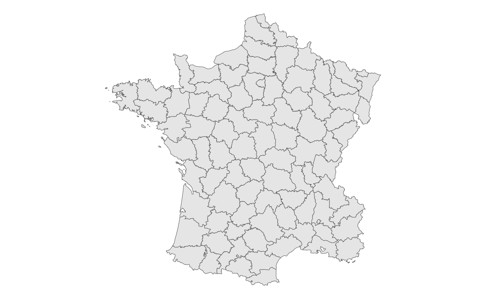
In this French example, the st_islands function
st_bridges() produces exactly the same neighbourhood
structure (based on contiguity) as
sfdep::st_contiguity(). This can be seen below by
piping these neighbourhood outputs through the st_islands
function st_quickmap_nb() which gives a visual
representation of the structure on a map. This function works with
neighbourhoods constructed from any package as long as they are in list
or matrix form.
For st_quickmap_nb(), the neighbourhoods should be
within an sf dataframe as a column called “nb”.
st_bridges() does this automatically whereas the “nb”
column needs to be added when using sfdep functions.
sfislands::st_bridges()
The st_bridges() contiguities below, where each
department is considered a neighbour of another if it touches it at
least one point…
g |> st_bridges("department") |>
st_quickmap_nb()
… are the same as these from sfdep:
sfdep::st_contiguity()
g |> mutate(nb = st_contiguity(geometry)) |>
st_quickmap_nb()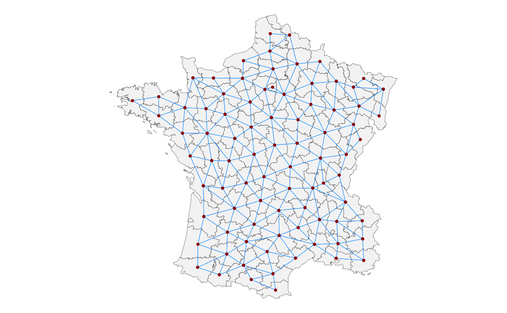
As these maps are produced using ggplot2, their
characteristics can be edited using normal ggplot2 syntax
(see 1, below). For convenience, simple arguments are also provided (see
2, below) for changing the core characteristics of the map in a simple
way:
ggarrange(
g |> mutate(nb = st_contiguity(geometry)) |>
st_quickmap_nb() +
geom_sf(data = g |> group_by(region) |> summarise(),
linewidth = 0.5, colour = "black", fill = NA) +
labs(title = "st_quickmap_nb()",
subtitle = "1. using ggplot syntax") +
theme_minimal() +
theme(panel.background = element_rect(fill = "aquamarine3", color = "black"),
axis.text = element_blank()),
g |> mutate(nb = st_contiguity(geometry)) |>
st_quickmap_nb(linkcol = "orange",
bordercol = "white",
pointcol = "yellow",
fillcol = "black",
linksize = 0.4,
bordersize = 0.3,
pointsize = 0.8,
title = "st_quickmap_nb()",
subtitle = "2. using simplified arguments"),
ncol=2
)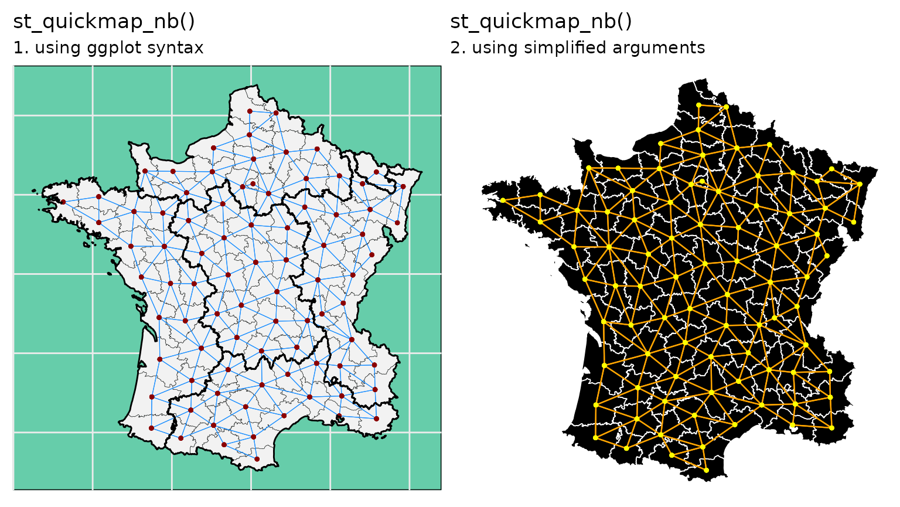
sfdep offers a number of different types of
neighbourhood structure, a selection of which are shown below. These can
again be conveniently visualised using the
st_quickmap_nb() function:
sfdep::st_dist_band()
All areas within a certain distance are considered neighbours:
g |> mutate(nb = st_geometry(g) |>
st_dist_band(upper = 150000)) |>
st_quickmap_nb()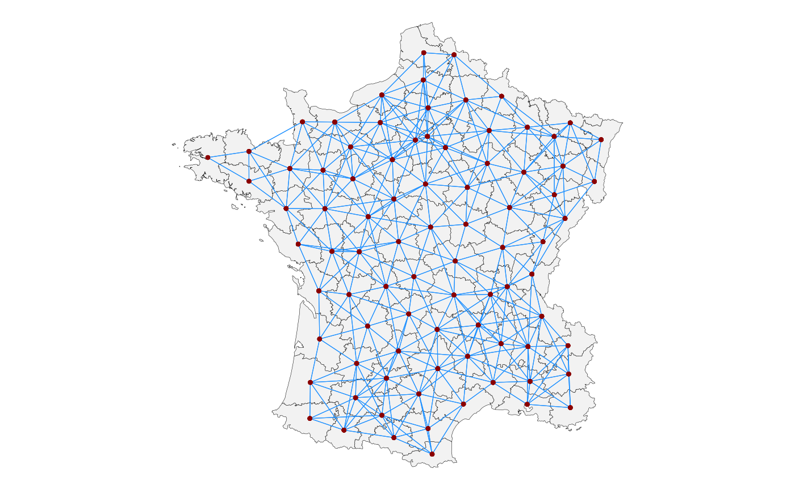
sfdep::st_knn()
The k-nearest-neighbours (here, 1) to each area are considered neighbours:
g |> mutate(nb = st_geometry(g) |>
st_knn(1, symmetric = TRUE)) |>
st_quickmap_nb()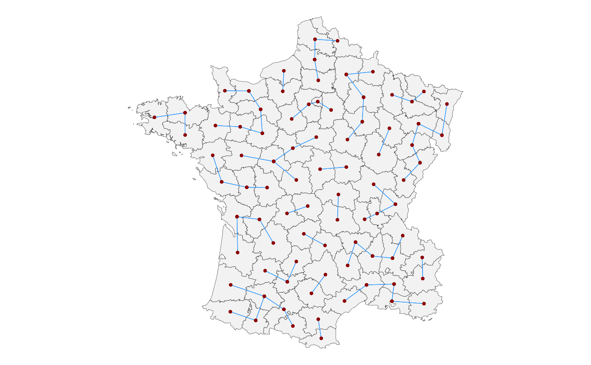
sfdep::st_block_nb()
All areas within a chosen block are considered neighbours:
id <- g$code_dept
regime <- g$region
g |>
mutate(
nb = st_block_nb(regime, id)
) |>
st_quickmap_nb()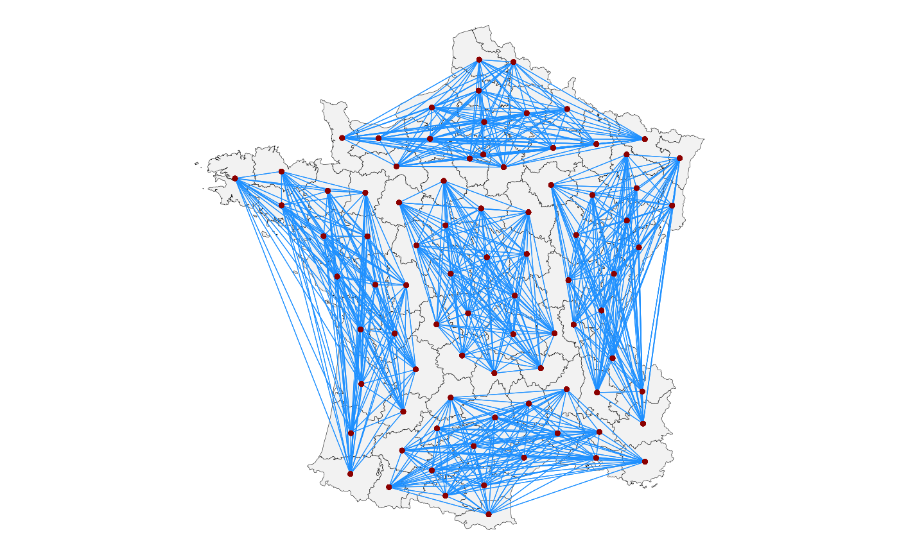
sfdep::st_lag_cumul()
Cumulative higher orders of contiguity such as also including neighbours-of-neighbours:
g |> mutate(nb = st_contiguity(geometry) |> st_nb_lag_cumul(2)) |>
st_quickmap_nb()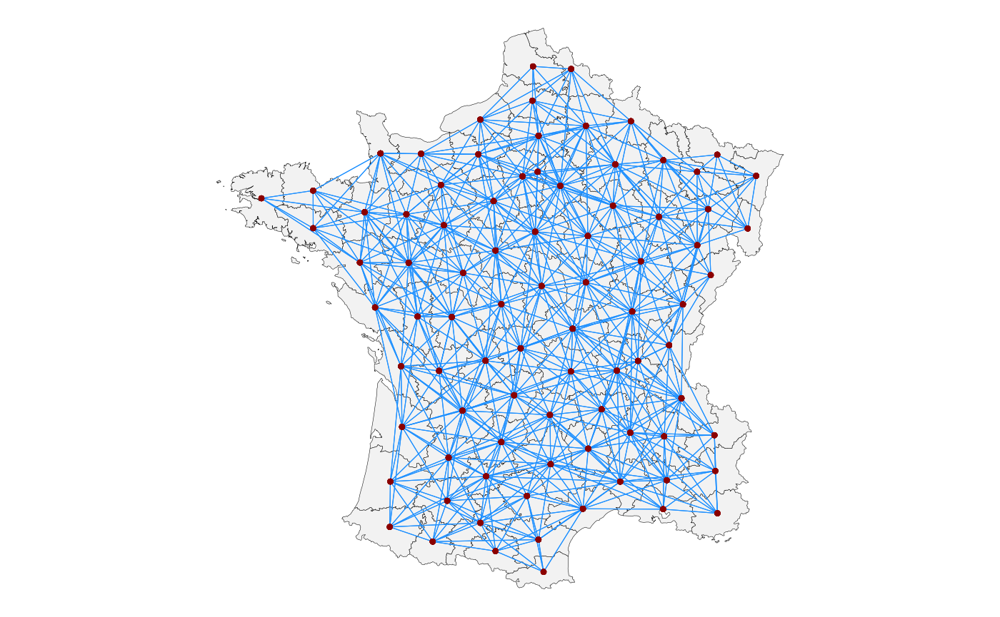
However, the sfdep functions above which rely on
contiguity will run into difficulties if we consider the following
geography:
England, Scotland & Wales
In the context of the constituencies of England, Scotland and Wales, there will be problems due to the presence of islands which will not feature in a contiguity graph unless we attempt to pick out these islands and set up a buffer around them. This process is, however, cumbersome and can induce contiguities which are not intended.
One potential remedy is to entirely exclude islands from the study, another is to construct a contiguity structure according to your desired criteria and then set the islands to be contiguous to their closest k constituencies.
st_bridges() can do both of these things.
Below is the map in question:
There are island constituencies in the north around Scotland but also less obvious ones in Wales and England. The constituencies which are non-contiguous are outlined in red below:
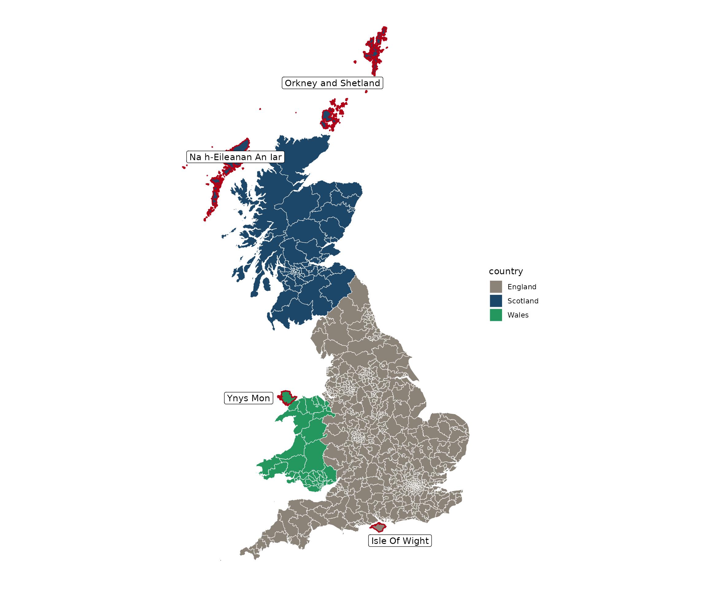
To incorporate these we use st_bridges(). We can set
remove_islands to TRUE if we decide to simply exclude the
islands, or we set link_k_islands to the closest k
constituencies to each islands which we want to bridge.
Remove islands
Below, with the argument remove_islands set to TRUE, we
simply remove these islands from the dataset entirely.
nbsf <- st_bridges(df = uk_election,
geom_col_name = "constituency_name",
remove_islands = T)
st_quickmap_nb(nbsf,
pointsize=0.05,
title = "st_bridges() contiguities",
subtitle = "no island constituencies\n(islands which remain are part of a contiguous constituency)")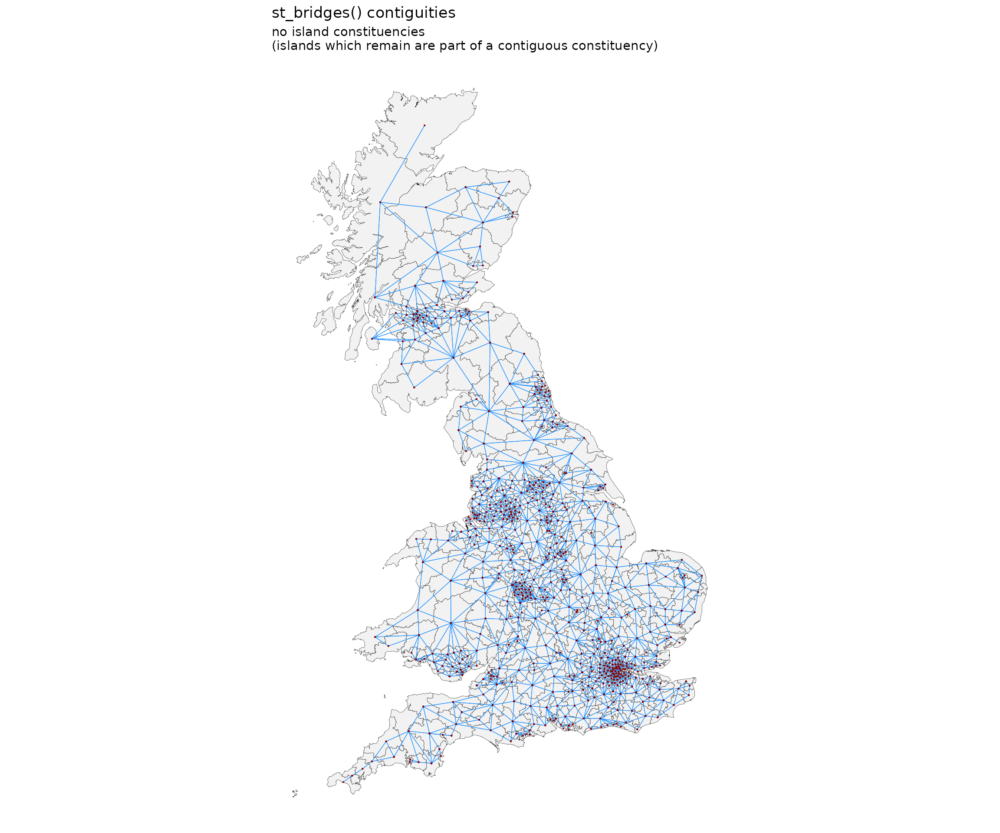
Connect islands
Alternatively, we can join islands to the nearest, say, 2
constituencies. st_bridges() by default returns the
original dataframe augmented with a “nb” column which contains the
contiguities in list form.
nbsf <- st_bridges(df = uk_election,
geom_col_name = "constituency_name",
link_islands_k = 2)
st_quickmap_nb(nbsf,
pointsize=0.05,
title = "st_bridges() contiguities",
subtitle = "islands linked to k=2 nearest constituencies")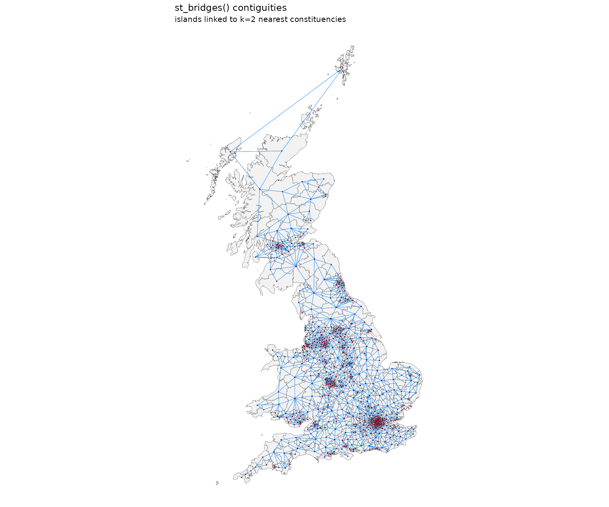
The neighbourhood structure which is created can be either a named
list (the default) or a named matrix. Different modelling packages have
different requirements for how this information should be presented.
Furthermore, we can choose add_to_dataframe to be TRUE (the
default) to return a dataframe with a column called nb
which contains the named list or matrix. If FALSE, only the
neighbourhood structure itself is returned
These options can be seen in the unexecuted code below:
nbsf <- st_bridges(df = sf_dataframe,
geom_col_name = "the column containing the names of the contiguous areas",
remove_islands = T/F,
link_islands_k = 1...n,
nb_structure = "list"/"matrix",
add_to_dataframe = T/F,
title = "title",
subtitle = "subtitle")The neighbourhoods are here in a list form:
head(nbsf$nb)
#> $Aberavon
#> [1] 80 157 371 419 451 547
#>
#> $Aberconwy
#> [1] 12 141 181 630
#>
#> $`Aberdeen North`
#> [1] 4 239 595
#>
#> $`Aberdeen South`
#> [1] 3 595
#>
#> $`Airdrie and Shotts`
#> [1] 142 156 309 327 332 369
#>
#> $Aldershot
#> [1] 70 395 517 544But the “nb” column can also be a matrix, and
st_quickmap_nb() will still return the same map:
nbsf <- st_bridges(df = uk_election,
geom_col_name = "constituency_name",
remove_islands = F,
link_islands_k = 2,
nb_structure = "matrix",
add_to_dataframe = T)
st_quickmap_nb(nbsf,
pointsize=0.05)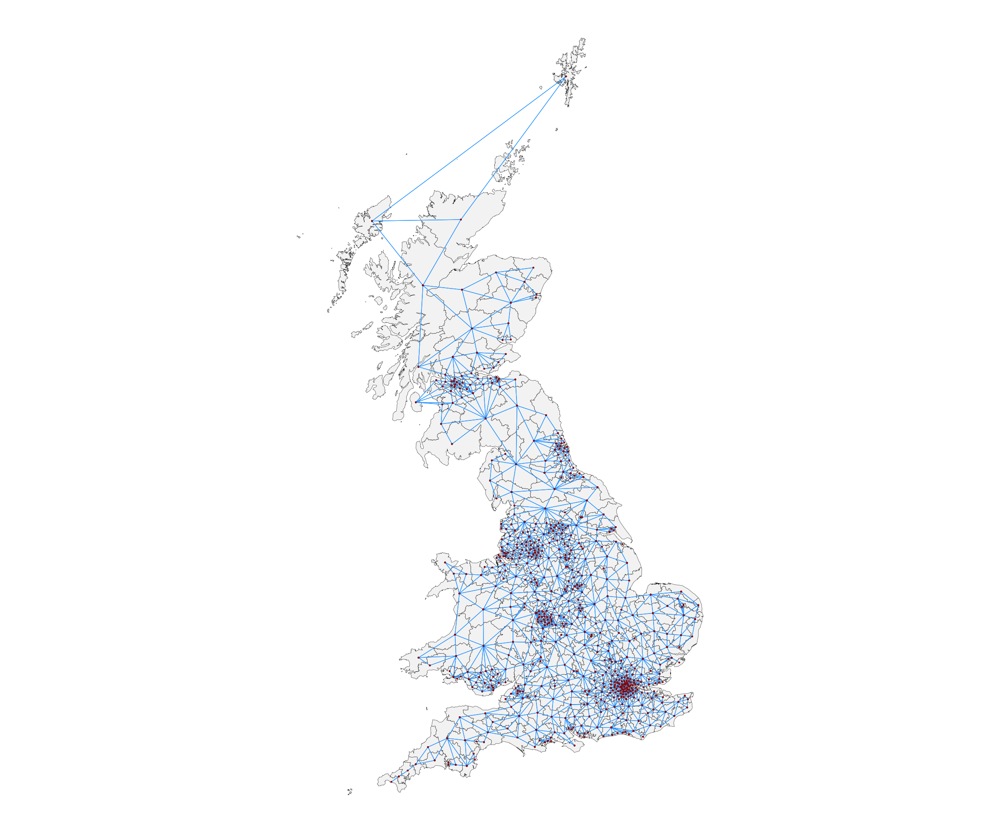
The matrix neighbourhood structure is now of the following form:
nbsf$nb[1:10,1:10]
#> [,1] [,2] [,3] [,4] [,5] [,6] [,7] [,8] [,9] [,10]
#> Aberavon 0 0 0 0 0 0 0 0 0 0
#> Aberconwy 0 0 0 0 0 0 0 0 0 0
#> Aberdeen North 0 0 0 1 0 0 0 0 0 0
#> Aberdeen South 0 0 1 0 0 0 0 0 0 0
#> Airdrie and Shotts 0 0 0 0 0 0 0 0 0 0
#> Aldershot 0 0 0 0 0 0 0 0 0 0
#> Aldridge-Brownhills 0 0 0 0 0 0 0 0 0 0
#> Altrincham and Sale West 0 0 0 0 0 0 0 0 0 0
#> Alyn and Deeside 0 0 0 0 0 0 0 0 0 0
#> Amber Valley 0 0 0 0 0 0 0 0 0 0Editing the contiguities
There are also functions for manually changing the results of a
neighbourhood construction. It may be the case that you want to add some
additional links or to remove others. For example, you may be aware from
local knowledge of connectivities which are not represented by mere
contiguity of polygons. The presence of tunnels or bridges across a body
of water would be an example of such a situation. The functions
st_manual_join_nb() and st_manual_cut_nb() do
this.
sfisland::st_check_islands()
To make the use of these functions easier and more intuitive, the
function st_check_islands() shows us what contiguities have
been set up for the islands by st_bridges():
nbsf |> st_check_islands()
#> island_names island_num nb_num nb_names
#> 1 Isle Of Wight 292 378 New Forest East
#> 2 Isle Of Wight 292 379 New Forest West
#> 3 Na h-Eileanan An Iar 370 101 Caithness, Sutherland and Easter Ross
#> 4 Na h-Eileanan An Iar 370 423 Orkney and Shetland
#> 5 Na h-Eileanan An Iar 370 461 Ross, Skye and Lochaber
#> 6 Orkney and Shetland 423 101 Caithness, Sutherland and Easter Ross
#> 7 Orkney and Shetland 423 370 Na h-Eileanan An Iar
#> 8 Ynys Mon 630 2 Aberconwy
#> 9 Ynys Mon 630 12 ArfonSometimes, as in this case, certain islands will have more than the specified k neighbours. This is due to the need for symmetry in the structure.
st_manual_join_nb() / st_manual_cut_nb()
Let us say we want to change some of these. For example, I will cut the tie between Isle Of Wight and New Forest East (using their numbers) and also between Ynys Mon and Arfon (using their names):
nbsf |>
st_manual_cut_nb(292,378) |>
st_manual_cut_nb("Ynys Mon","Arfon") |>
st_check_islands()
#> island_names island_num nb_num nb_names
#> 1 Isle Of Wight 292 379 New Forest West
#> 2 Na h-Eileanan An Iar 370 101 Caithness, Sutherland and Easter Ross
#> 3 Na h-Eileanan An Iar 370 423 Orkney and Shetland
#> 4 Na h-Eileanan An Iar 370 461 Ross, Skye and Lochaber
#> 5 Orkney and Shetland 423 101 Caithness, Sutherland and Easter Ross
#> 6 Orkney and Shetland 423 370 Na h-Eileanan An Iar
#> 7 Ynys Mon 630 2 AberconwyAs extra contiguities can be difficult to distinguish, an extreme
case is shown below to demonstrate st_manual_join_nb().
Gower in South Wales is joined to St
Ives in Cornwall and then mapped:
st_bridges(df = uk_election|> filter(region %in% c("Wales","South West")),
geom_col_name = "constituency_name",
link_islands_k = 2
) |>
st_manual_join_nb("Gower","St Ives") |>
st_quickmap_nb(title = "st_bridges contiguities: Wales & South West",
subtitle = "with additional st_manual_join_nb() for Gower and St Ives") +
geom_sf_label(data=uk_election|> filter(constituency_name %in% c("Gower","St Ives")),
aes(label=constituency_name),nudge_x = -30000)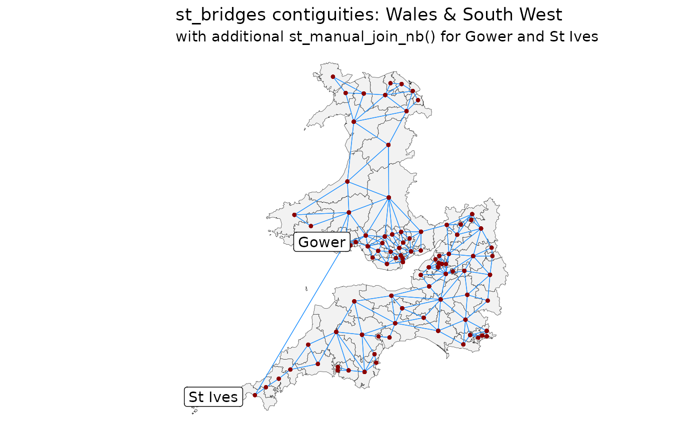
These manual functions can also, of course, be used to edit any of
the previously discussed neighbourhood structures created by
sfdep.
For example, looking just at Scotland we can use
sfdep::st_nb_lag_cumul() to get first and second degree
neighbours:
uk_election |>
filter(region == "Scotland") |>
mutate(nb = st_contiguity(uk_election$geometry[uk_election$region == "Scotland"]) |>
st_nb_lag_cumul(2)) |>
st_quickmap_nb()This does not include the island constituencies. We can chose to
include them by first using st_bridges() with k=2…
uk_election |>
filter(region == "Scotland") |>
st_bridges(geom_col_name = "constituency_name",
link_islands_k = 2) |>
st_quickmap_nb()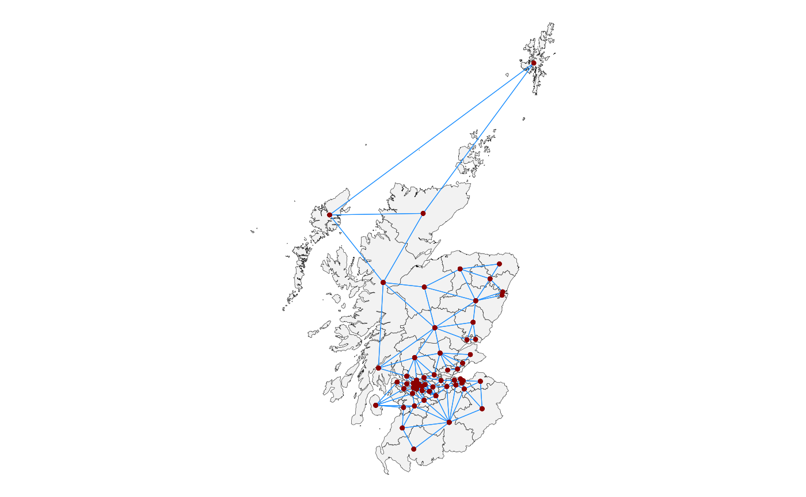
… and then examining the connections which have been made for islands:
uk_election |>
filter(region == "Scotland") |>
st_bridges(geom_col_name = "constituency_name",
link_islands_k = 2) |>
st_check_islands()
#> island_names island_num nb_num nb_names
#> 1 Na h-Eileanan An Iar 47 9 Caithness, Sutherland and Easter Ross
#> 2 Na h-Eileanan An Iar 47 51 Orkney and Shetland
#> 3 Na h-Eileanan An Iar 47 55 Ross, Skye and Lochaber
#> 4 Orkney and Shetland 51 9 Caithness, Sutherland and Easter Ross
#> 5 Orkney and Shetland 51 47 Na h-Eileanan An IarWe can then add these island connections to the output of
sfdep::st_nb_lag_cumul():
uk_election |>
filter(region == "Scotland") |>
mutate(nb = st_contiguity(uk_election$geometry[uk_election$region == "Scotland"]) |>
st_nb_lag_cumul(2)) |>
st_manual_join_nb(47,9) |>
st_manual_join_nb(47,51) |>
st_manual_join_nb(47,55) |>
st_manual_join_nb(51,9) |>
st_manual_join_nb(51,47) |>
st_quickmap_nb()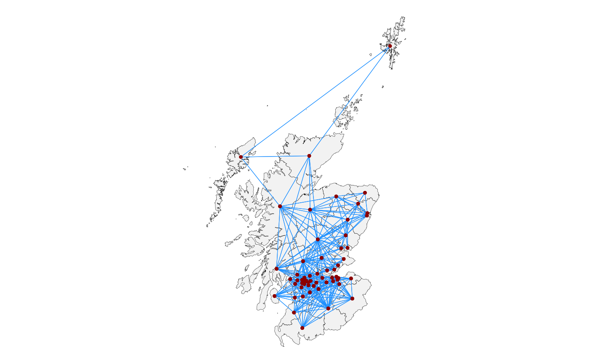
Modelling & post-functions
Having set up a neighbourhood structure and embedded it as a named
list or matrix within the original sf dataset as column
nb, there are some functions to make it easy to quickly
perform ICAR smoothing, augment the original dataframe with these
predictions, and visualise them.
For example, we can use the mgcv package to generate a
Markov Random Field ICAR smooth of poor health across the study area.
This is done very quickly by using st_bridges() to prepare
the data, putting that inside the mgcv GAM formulation, and
then piping into the st_augment() and
st_quickmap_preds() functions.
prep_data <- st_bridges(uk_election, "constituency_name")
gam(health_not_good ~ s(constituency_name, bs='mrf', xt=list(nb=prep_data$nb), k=100),
data=prep_data, method="REML") |>
st_augment(prep_data) |>
st_quickmap_preds()
#> [[1]]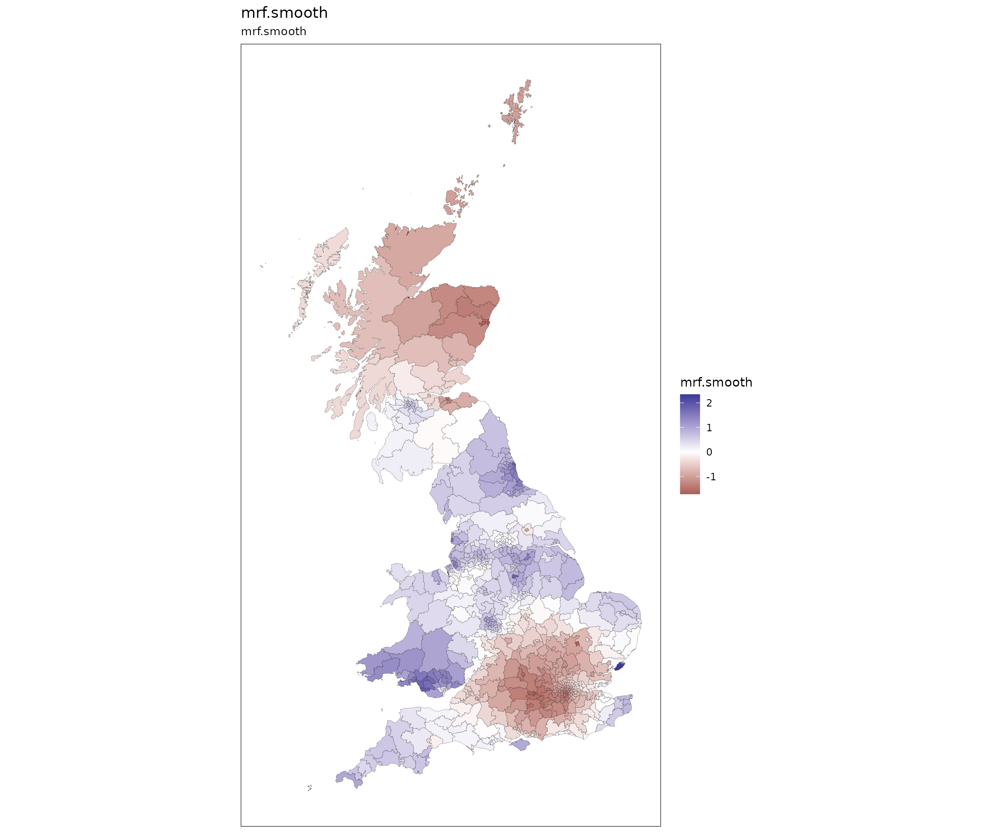
An equivalent model, this time smoothing over degree_educated, can be
fitted using brms. This package requires the neighbourhoods
to be in matrix form:
prep_data2 <- st_bridges(uk_election, "constituency_name", nb_structure = "matrix")
fit <- brm(degree_educated ~ car(W, gr=constituency_name, type="icar"),
data = prep_data2, data2 = list(W=prep_data2$nb),
family = gaussian(),file = "brmsfit_degree")
prep_data2$brmsfit <- predict(fit,prep_data2)[,1]
ggplot(prep_data2)+geom_sf(aes(fill=brmsfit), linewidth=0.1) +
scale_fill_gradient2(low="firebrick4",mid="white",high="darkblue",midpoint = 0) +
coord_sf(datum=NA) +
theme_minimal() +
theme_bw()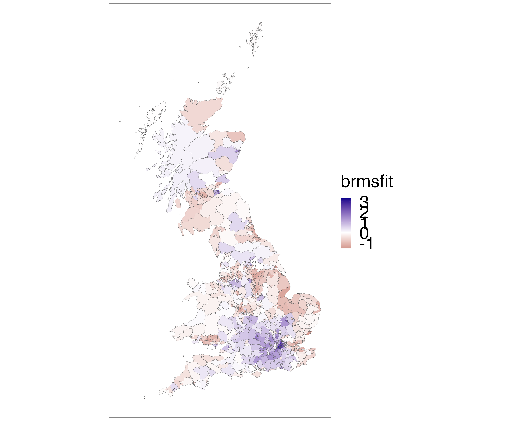
More complex models with random effects and multiple smooths are also
possible with mgcv and the st_augment() and
st_quickmap_preds() functions can handle these and label
the columns and maps which are generated appropriately. This is shown
below with a model of swing in the 2019 election:
prep_data3 <- st_bridges(uk_election, "constituency_name") # decide upon the contiguities and add them to the df
model <- gam(con_swing ~
s(region, bs="re") + # region level random intercept
s(county, bs="re") + # county level random intercept
s(county, degree_educated, bs="re") + # county level random coefficient
s(constituency_name, bs='mrf',
xt=list(nb=prep_data3$nb),k=10) + # ICAR constituency ICAR varying coefficients
s(constituency_name, by=white, bs='mrf',
xt=list(nb=prep_data3$nb),k=10), # ICAR constituency ICAR varying coefficients
data=prep_data3, method="REML") |>
st_augment(prep_data3) |> # pipe into function to get estimates
st_quickmap_preds() # pipe into this for visualisation
ggarrange(plotlist = model, legend = "none", nrow=1)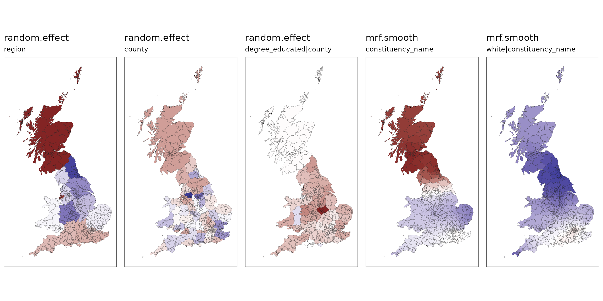
To see the estimates returned:
gam(con_swing ~
s(region, bs="re") + # region level random intercept
s(county, bs="re") + # county level random intercept
s(county, degree_educated, bs="re") + # county level random coefficient
s(constituency_name, bs='mrf',
xt=list(nb=prep_data3$nb),k=10) + # ICAR constituency ICAR varying coefficients
s(constituency_name, by=white, bs='mrf',
xt=list(nb=prep_data3$nb),k=10), # ICAR constituency ICAR varying coefficients
data=prep_data3, method="REML") |>
st_augment(prep_data3) |>
head()
#> Simple feature collection with 6 features and 20 fields
#> Geometry type: GEOMETRY
#> Dimension: XY
#> Bounding box: xmin: 264110.4 ymin: 148666.1 xmax: 488768.5 ymax: 812377.5
#> Projected CRS: OSGB36 / British National Grid
#> degree_educated health_not_good white con_swing population region
#> 1 -1.21794372 2.4694480 0.6393329 8.5917223 66133 Wales
#> 2 0.04609836 0.5666903 0.6561204 2.2040312 56415 Wales
#> 3 0.26593462 -0.8699365 0.1441816 7.1285493 99654 Scotland
#> 4 1.62837520 -1.7731408 0.3038995 2.9732599 93197 Scotland
#> 5 -1.35386780 0.8155333 0.6963927 -0.2362672 85845 Scotland
#> 6 -0.21109416 -1.3619136 -0.1675498 5.6993250 103922 South East
#> county constituency_name country nb
#> 1 West Glamorgan Aberavon Wales 80, 157, 371, 419, 451, 547
#> 2 Clwyd Aberconwy Wales 12, 141, 181
#> 3 Scotland Aberdeen North Scotland 4, 239, 595
#> 4 Scotland Aberdeen South Scotland 3, 595
#> 5 Scotland Airdrie and Shotts Scotland 142, 156, 309, 327, 332, 369
#> 6 Hampshire Aldershot England 70, 395, 517, 544
#> random.effect.region random.effect.county
#> 1 0.07736634 -0.0889861
#> 2 0.07736634 -0.1062061
#> 3 -1.69257542 -0.2986088
#> 4 -1.69257542 -0.2986088
#> 5 -1.69257542 -0.2986088
#> 6 -0.60617303 0.2472990
#> random.effect.degree_educated|county mrf.smooth.constituency_name
#> 1 -3.0504238 0.08001029
#> 2 -1.6077523 0.10070833
#> 3 -0.1165337 -0.30112582
#> 4 -0.1165337 -0.30111510
#> 5 -0.1165337 -0.34218741
#> 6 -2.0453936 0.01698329
#> mrf.smooth.white|constituency_name se.random.effect.region
#> 1 0.9971918 0.5881627
#> 2 1.2785329 0.5881627
#> 3 1.2800763 0.6985112
#> 4 1.2799615 0.6985112
#> 5 1.7736548 0.6985112
#> 6 -0.1353957 0.5113682
#> se.random.effect.county se.random.effect.degree_educated|county
#> 1 0.4400444 1.0549478
#> 2 0.4432314 1.7152822
#> 3 0.4500975 0.2933430
#> 4 0.4500975 0.2933430
#> 5 0.4500975 0.2933430
#> 6 0.3825063 0.6696364
#> se.mrf.smooth.constituency_name se.mrf.smooth.white|constituency_name
#> 1 0.3101948 0.7308175
#> 2 0.2039813 0.4377840
#> 3 0.5769227 1.0462122
#> 4 0.5769674 1.0463117
#> 5 0.4265664 0.7384490
#> 6 0.1762707 0.2423523
#> geometry
#> 1 POLYGON ((290786.3 202886.7...
#> 2 POLYGON ((283209.3 381440.5...
#> 3 MULTIPOLYGON (((395379.7 80...
#> 4 POLYGON ((396214 805849.7, ...
#> 5 POLYGON ((290854.4 662154.9...
#> 6 POLYGON ((485408.1 159918.6...Back to the guerry dataset
Returning to the dataset used in sfdep, we can easily
create a smooth of suicides in France in 1830 as follows. Since there
are no islands, we use st_bridges() and it will function
like sfdep:st_contiguity() except that it automatically
adds a neighbourhood ‘nb’ column to the dataframe.
prep_data4 <- g |> st_bridges("department")
mod4 <- gam(suicides ~ s(department, bs='mrf', xt=list(nb=prep_data4$nb), k=80),
data=prep_data4, method="REML") |>
st_augment(prep_data4) |>
st_quickmap_preds()
ggarrange(plotlist=mod4)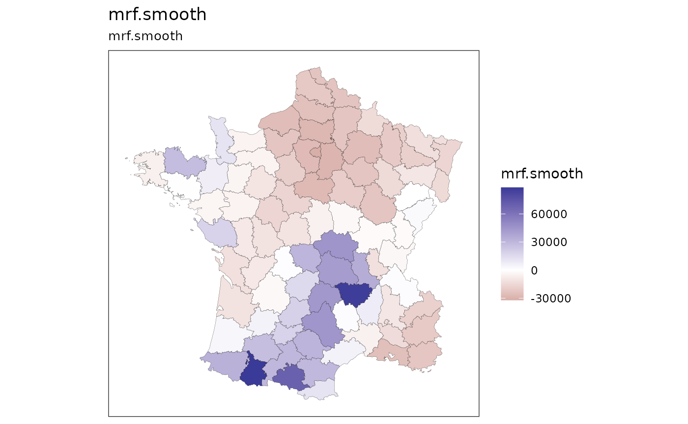
Or fit a more complex mixed model:
prep_data5 <- g |>
st_bridges("department")
model5 <- gam(donations ~
s(region, bs="re") +
s(region, crime_prop, bs="re") + # county level random coefficient
s(department, bs='mrf',
xt=list(nb=prep_data5$nb),k=20) + # ICAR constituency level varying coefficents
s(department, by=infants, bs='mrf',
xt=list(nb=prep_data5$nb),k=20), # ICAR constituency level varying coefficents
data=prep_data5, method="REML") |>
st_augment(prep_data5) |> # pipe into function to get estimates
st_quickmap_preds() # pipe into this for visualisation
ggarrange(plotlist = model5, legend = "none", nrow = 1)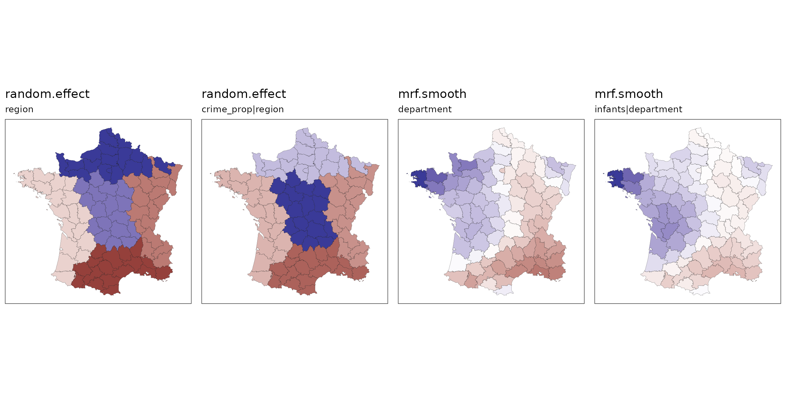